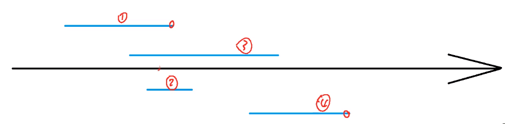
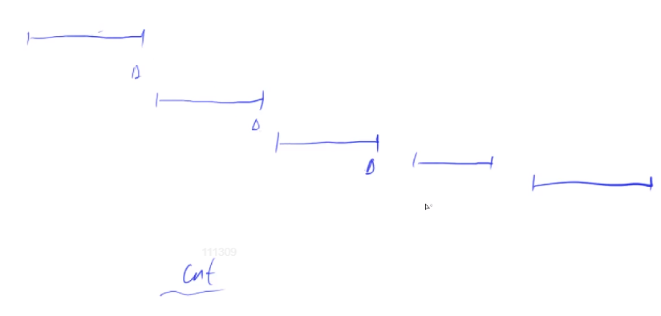

第六讲 贪心
区间问题
905. 区间选点
选尽量少的点覆盖 N 个闭区间 （下面题目都为闭区间，不再重复）
方法
- 按每个区间右端点从小到大排序
- 枚举，如果当前区间已经包含点，则跳过；否则，选择当前区间的右端点

证明
常见证法一：对于 $A = B$，只需证$A \le B$ 和 $A \ge B$
每个区间一定包含一个点，当前方案是一个合法方案，设为
cnt；设最优解为ans，则ans为所有可行方案里的最小值，有 $ans \le cnt$按照此选法，能选出
cnt个互不相交的区间，想覆盖这些区间至少需要cnt个点，所有可行方案都应该大于等于cnt，有 $ans \ge cnt$

代码
简单省略，注意起始右端点取 $-2e9$ 的写法
应用题 112. 雷达设备
- 使用
double - 两个浮点的差值小于
1e-6，则认为相同（不加此判断也能通过）
908. 最大不相交区间数量
选择最大数量的不相交的闭区间
与上题完全一致
证明
参考上题证明2，这样的选法一定是一种可行的方式，答案一定是所有可行方案的最大值，有 $ans \ge cnt$
反设 $ans > cnt$，即最优解选出了
ans个互不相交的区间，则至少需要ans个点才能将这些区间覆盖，参考上题，已经证明了只需要cnt个点就能将所有区间覆盖，矛盾，因此有 $ans \le cnt$
906. 区间分组 111. 畜栏预定
将闭区间分成若干个组，每组之间区间两两不相交
方法
- 将所有区间按左端点从小到大排序
- 从前往后处理每个区间，判断能否将其放到某个现有的组中 $l[i] > Max_r$，若不能，新建一组放入；否则放入，更新当前组的 $max_r$
证明
划分方式合法，而
ans是所有合法方案里的最小值，有 $ans \le cnt$找到一个特殊的时刻：第一次开
cnt这个组的时。对于当前区间i，设其左端点为 $l_i$，对于前cnt-1个区间，它们的左端点一定小于等于 $l_i$，并且右端点一定大于等于 $l_i$ （否则可以放进去），这cnt区间都有一个点 $l_i$ 包含其中，因此可行方案至少包含cnt个组，有 $ans \ge cnt$
代码
用堆维护动态最小值（右端点）
111 多了每个区间应该被分到哪里，用结构体或者 pair 套 pair 都可以
907. 区间覆盖
用 N 个闭区间覆盖一个给定区间，如果不能覆盖返回 -1
方法
- 将左端点从小到大排序
- 从前往后依次枚举每个区间，在所有能覆盖
start的区间中选择右端点最大的区间，然后将start更新为右端点最大值
证明
常见证法二：将最优解通过调整方式变为我们的方案
对于任意一个最优解，将两个方案选出的区间按左端点排序，从前往后找到第一个不一样的区间，有 $R{cnt} \ge R{ans}$ ，对于 ans 里的下一个区间的左端点 $L’{ans}$ ，有 $R{cnt} \ge R{ans} \ge L’{ans}$ ，因此可将当前 ans 的区间替换为 cnt 这个区间，继续上述过程，ans 的答案个数不会发生变化，且能将 ans 的所有区间替换为 cnt 的所有区间，有 $ans = cnt$
代码
此题循环内判断条件较复杂，需要考虑：
- 当前左端点是否被覆盖
- 尽可能找到最大的右端点
- 区间遍历结束右端点是否被覆盖
1 | bool flag = false; |
Huffman树
148. 合并果子
经典问题
证明
- 权值最小的两个点深度一定最深，且可以互为兄弟
反证：设其中一个点不为最深，则交换它和当前最深点（非最小）后，结果一定不会变差（不等式证明）
- 证明
n个点的哈夫曼树问题，在合并最小两个点后可以转化为n - 1的子问题（也即n - 1的最优解是n的最优解F(n)）
满足等式关系（待补充）
排序不等式
913. 排队打水
直觉：慢的人后打水，排序
证明 调整法
假设不是按照从小到大排序，则必然存在两个人，前一个人比后一个人大，有 $ti > t{i+1}$，则：
交换前：$ti (n - i) + t{i + 1}(n - i - 1)$
交换后：$t_{i + 1}(n - 1) + t_i(n - i - 1)$
两式相减，有 $ti - t{i + 1} > 0$ ，证明交换后更优
绝对值不等式
104. 货仓选址
$f(x) = |x_1 - x| + |x_2 - x| + … +|x_n - x|$，求最小值
$f(x)=(|x1 - x| + |x_n - x|) + (|x_2 - x| + |x{n-1} - x|) + …$
$\ge |x1 - x_n| + |x_2 - x{n - 1}| + …$
取等条件为 x 在两数之间，x 取中位数
推公式
125. 耍杂技的牛
所有牛需叠在一起，定义风险值为每头牛上面的重量值之和 $sum_W$ - 自己的强壮程度 $S$， 求最大风险值的最小值
方法
按照 $w_i + s_i$ 从小到大（从上到下）排序，结果最优
证明
只证贪心得到的答案 <= 最优解
反设不是按照从小到大排序，则一定存在 $wi + s_i > w{i + 1} + s_{i + 1}$
| 第 i 个位置上的牛 | 第 i + 1 个位置上的牛 | |
|---|---|---|
| 交换前 | $w1 + w_2 + … +w{i - 1} - s_i$ | $w1 + w_2 + … +w_i - s{i + 1}$ |
| 交换后 | $w1 + w_2 + … +w{i - 1} - s_{i + 1}$ | $w1 + … +w{i - 1} + w_{i + 1} - s_i$ |
消去相同项，然后同时 $+si + s{i + 1}$
| 第 i 个位置上的牛 | 第 i + 1 个位置上的牛 | |
|---|---|---|
| 交换前 | $s_{i + 1}$ | $w_i + s_i$ |
| 交换后 | $s_i$ | $w{i + 1} + s{i + 1}$ |
可知交换后的两项均小于交换前第 i + 1 个位置上的那一项
补充：114.国王游戏
上一题加减改为乘除，且涉及高精度
证明过程与上题一模一样